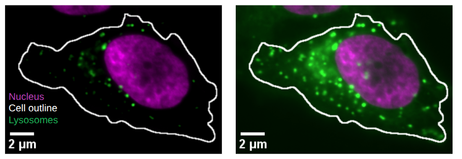
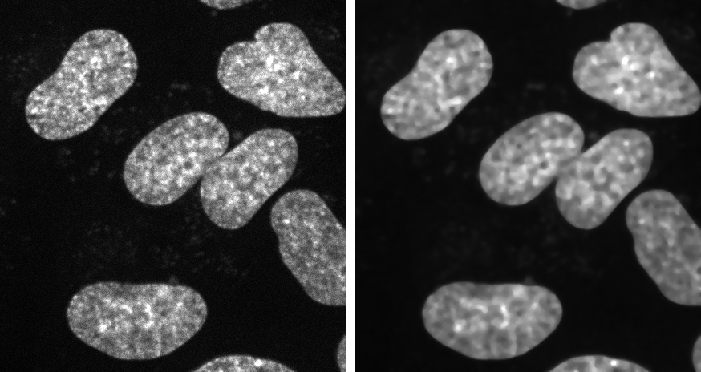
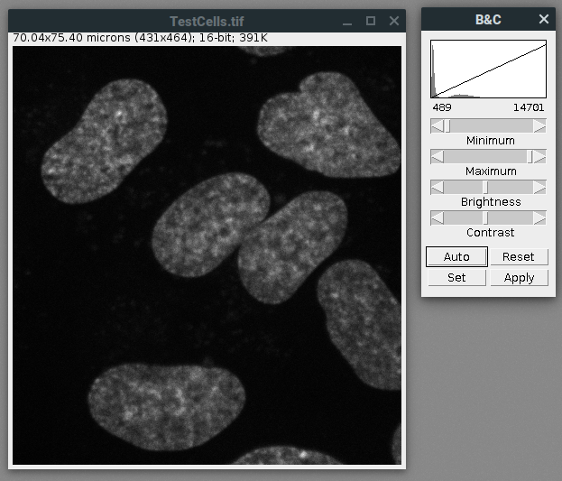
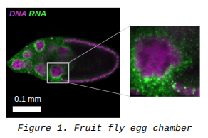
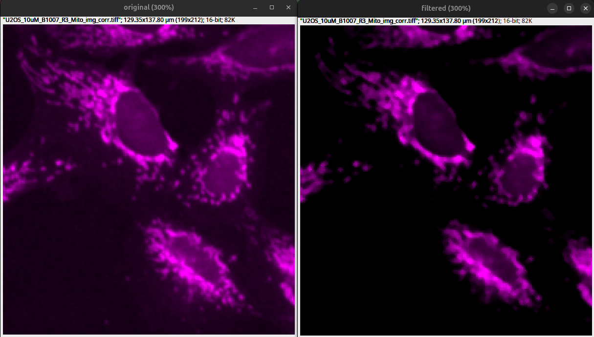
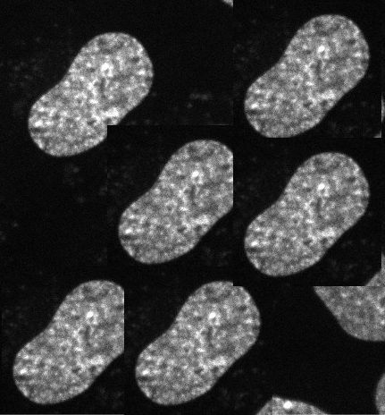
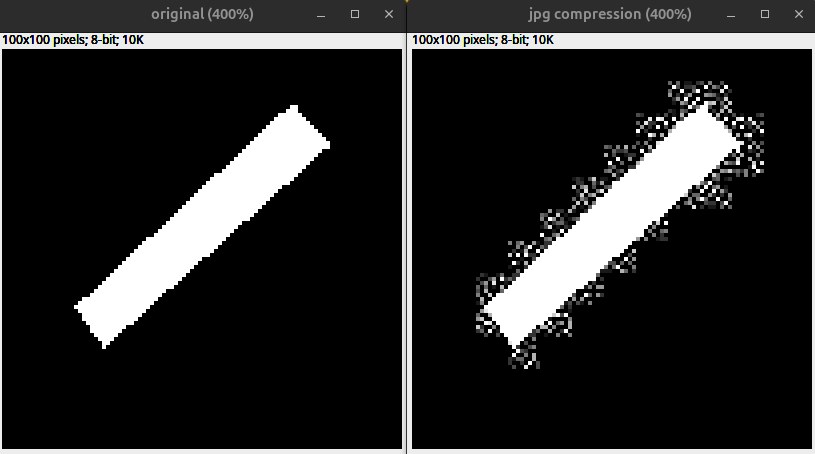
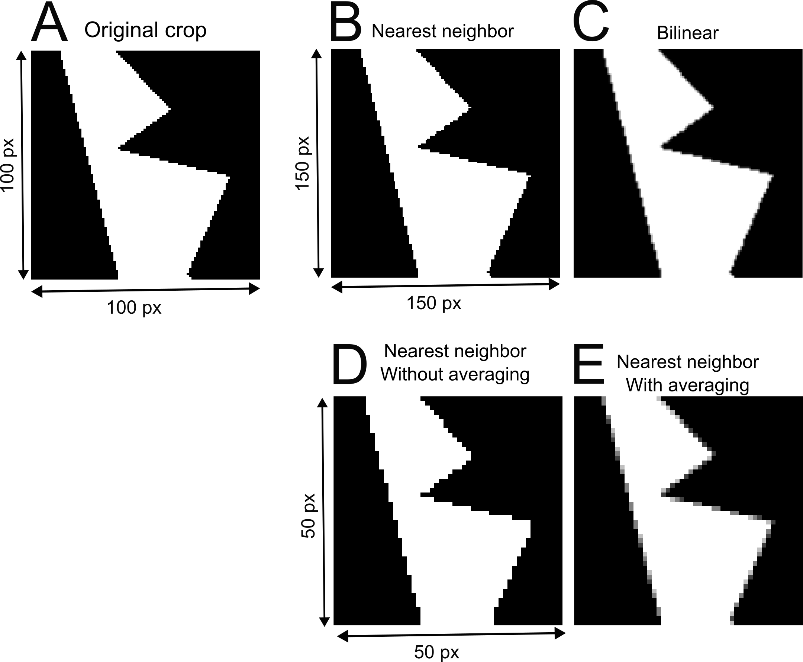

Ethical image processing#
Topcis: image processing, ethics
Motivation#
When you employ the microscope, shake off all prejudice, nor harbour any favorite opinions; for, if you do, ‘tis not unlikely fancy will betray you into error, and make you see what you wish to see. Henry Baker - Microscope Made Easy 1742
Microscopy is a technique used to document scientific observations through images. The resulting digital images constitute primary scientific data. While such data often require processing for clear and effective presentation, inappropriate manipulation can distort or misrepresent the underlying findings.
Therefore, strict ethical principles must be applied during image processing to ensure that the integrity and scientific meaning of the data are preserved.
Key considerations#
Scientific digital images are data.
Inappropriate manipulations compromise them.
Introduction#
Image processing is an essential step in preparing microscopy data for publication. To ensure that images communicate scientific results accurately and transparently, it is crucial to understand and apply principles that preserve the original information.
{kind=link}

Fig. 61 This is the same image processed with different settings in the Lysosome channel. Left less Lysosomes are visible and they are only close to the Nucleus compared to right.#
This section introduces guiding principles for ethical image processing. It draws on the seminal work of Douglas W. Cromey, whose contributions have helped define best practices in the responsible handling of scientific images:
Cromey DW. Avoiding twisted pixels: ethical guidelines for the appropriate use and manipulation of scientific digital images. Sci Eng Ethics. 2010 Dec;16(4):639-67. doi: 10.1007/s11948-010-9201-y
Cromey DW. Digital images are data: and should be treated as such. Methods Mol Biol. 2013;931:1-27. doi: 10.1007/978-1-62703-056-4_1
Keep Original Data File Safe and Unchanged#
{kind=link}

Fig. 62 Process copy of image: (Left) Orginal image. (Right) Image processing performed on copy.#
Keep unprocessed image data file.
Perform manipulations on a copy.
Document all processing steps.
Fiji macros or analysis code allow to share your analysis.
Simple Adjustments to the Entire Image are Usually Acceptable#
{kind=link}

Fig. 63 Image processing: Linear adjustments such as adjustment of brightness contrast on the entire image.#
Linear adjustments on entire image are fine: e.g. brightness and contrast.
For comparison treat all images the same.
Cropping an Image is Usually Acceptable#
{kind=link}

Fig. 64 Overview and crop shown side by side.#
Cropping is acceptable for visualization.
Result should be clearly shown.
Important that selection is representative.
Show overview of cropped image and label origin of crop.
Treat Images the Same for Comparison#
Fig. 65 The same image processed with different settings produces different visual results.#
Acquire images under identical conditions.
Treat identical in image processing.
Do not Beautify Images#
{kind=link}

Fig. 66 Filters and extreme brightness contrast adjustments drastically alter images and remove information: (Left) original with acceptable brightness contrast adjustments. (Right) Median filter with Sigma 1 and drastic brightness contrast adjustments that crop low intensities.#
Filters to beautify images is usually not recommended.
Beautiful images have background and noise!
If you use software filters disclose them in the methods or figure legends.
Processing Only Parts of an Image is Bad#
Warning
Manipulations applied to only one area of an image, and not to others, are questionable.
{kind=link}
Cloning and Copying Parts of an Image into Another is Really Bad#
Warning
Cloning or copying objects from other parts of an image or from a different image, is very questionable.
{kind=link}

Improper image duplication is a big issue in the scientific literature:
Bik EM, Casadevall A, Fang FC. 2016. The Prevalence of Inappropriate Image Duplication in Biomedical Research Publications. mBio 7. doi: [10.1128/mbio.00809-16] (https://doi.org/10.1128/mbio.00809-16)
Intensity Measurements are Difficult#
Beware of pitfalls for quantification: e.g., clipping
Perform on uniformly processed image data.
Ideally image intensities should be calibrated to a known standard.
Further reading list for quantitative microscopy:
Brown CM. Fluorescence microscopy–avoiding the pitfalls. J Cell Sci. 2007 May 15;120(Pt 10):1703-5. doi: 10.1242/jcs.03433
Pawley J. The 39 steps: a cautionary tale of quantitative 3-D fluorescence microscopy. Biotechniques. 2000 May;28(5):884-6, 888. doi: 10.2144/00285bt01
North AJ. Seeing is believing? A beginners’ guide to practical pitfalls in image acquisition. J Cell Biol. 2006 Jan 2;172(1):9-18. doi: 10.1083/jcb.200507103
Waters JC. Accuracy and precision in quantitative fluorescence microscopy. J Cell Biol. 2009 Jun 29;185(7):1135-48. doi: 10.1083/jcb.200903097
Avoid the Use of Lossy Compression#
{kind=link}

Fig. 67 Effect of lossy compression due to JPEG compression: (Left) Unprocessed example. (Right) Copy saved as .jpg.#
Lossy compression alters images permanently.
Avoid saving scientific images as .jpg, since it uses lossy compression.
Do not perform quantitative analysis on lossy-compressed images.
Metadata Matters#

Fig. 68 Nocodazole induces cell death in U2-OS cells: (a) U2-OS cells treated with DMSO only. (b) Enlarged cell treated with DMSO. (c) U2-OS treated with Nocodazole at 5 µM concentration induces cell death note the many round cells (White Arrowheads). (d) Enlarged dead or dying cell. Scale bar represents 100 µm (a) and 20 µm (b).#
Imaged objects have real world dimension.
Image scale matters.
Explain other information such as color or channels.
Providing metadata allows reproduction of microscopy experiments.
Further reading for microscopy metadata:
Montero Llopis, P., Senft, R.A., Ross-Elliott, T.J. et al. Best practices and tools for reporting reproducible fluorescence microscopy methods. Nat Methods 18, 1463–1476 (2021). https://doi.org/10.1038/s41592-021-01156-w
Transforming and scaling is problematic#
Images are typically processed as raster graphics (a grid of pixels). Therefore, transformations such as rotation (other than 90° increments) and resizing require interpolation, which permanently alters the image data.

Fig. 69 Interpolation and rotation. (Left) 10 x 10 px original. (Middle) 90 Degree rotation. (Right) 45 Degree rotation with bilinear interpolation.#
{kind=link}

Fig. 70 Interpolation and rescaling: (A) Original crop from example image. (B-E) The crop is resized with different interpolation methods. (B) The example image crop is increased in size by 50% using the nearest neighbor interpolation. (C) The example image crop is upsampled using bilinear interpolation. (D) Downsampling using nearest neighbor interpolation without averaging. (E) Downsampling of the example image crop with nearest neighbor interpolation and averaging.#